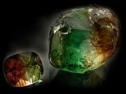
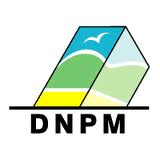

Engenheiro de Mina e Geologo
Engenheiro de Mina e Geologo
Mineração
DNPM - Departamento Nacional de Produção Mineral...
Projetos
Projetos de Engenharia de Minas...
Responsavel Técnico
Responsabilidade Técnica junto ao CREA...
Regularização Ambiental...
Paulo C Ferreira - 31 99260-3010
ATENDE ESTE SEGMENTO DE MERCADO POR MEIO DE:

Consultoria - Protocolos e Elaboração de Documentos; Junto ao Departamento Nacional de Produção Mineral; Profissionais Como Geólogo e engenheiro de minas; Despachante Para Protocolar Requerimentos Junto ao DNPM - Belo Horizonte - Minas Gerais
Produtos e Serviços

Área de Atuação,
Atualmente estamos com uma equipe multidisciplinar capacitada para realizar serviços variados na área mineral. Estamos capacitados para oferecer serviços de pesquisa mineral, lavra e beneficiamento mineral,
Atuamos em;
Elaboração de documentos e protocolo junto ao dnpm; Cadastro de pessoa física e jurídica via sedex; Requerimentos de pesquisa mineral; Requerimentos de licenciamento; Relatório anual de lavra – ral; Relatório final de pesquisa mineral; Registro de extração – licenciamento – pesquisa; Consulta via gps de disponibilidade de área; Consultas de processos junto ao dnpm; Acompanhamento de processos ao dnpm; Profissionais como geólogo e engenheiro de minas; Acompanhamento de alvará de pesquisa ao dnpm;.,...
Corpo Técnico
A empresa
“possui seu quadro de funcionários formado por engenheiros de mina e consultores especializados. Tais profissionais formam uma equipe multidisciplinar preparada para a realização dos mais diversos trabalhos na área ambiental e mineral.. ”
Atualmente
“uma de nossas mais importantes diretrizes é promover uma sólida capacitação científica e tecnológica, desenvolvendo metodologias próprias e promovendo a contínua aquisição de novos conhecimentos junto aos órgãos de fomento à pesquisa e, também, através de docentes das Instituições Educacionais de Minas.. ”